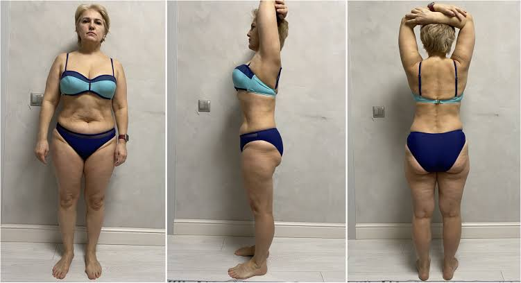
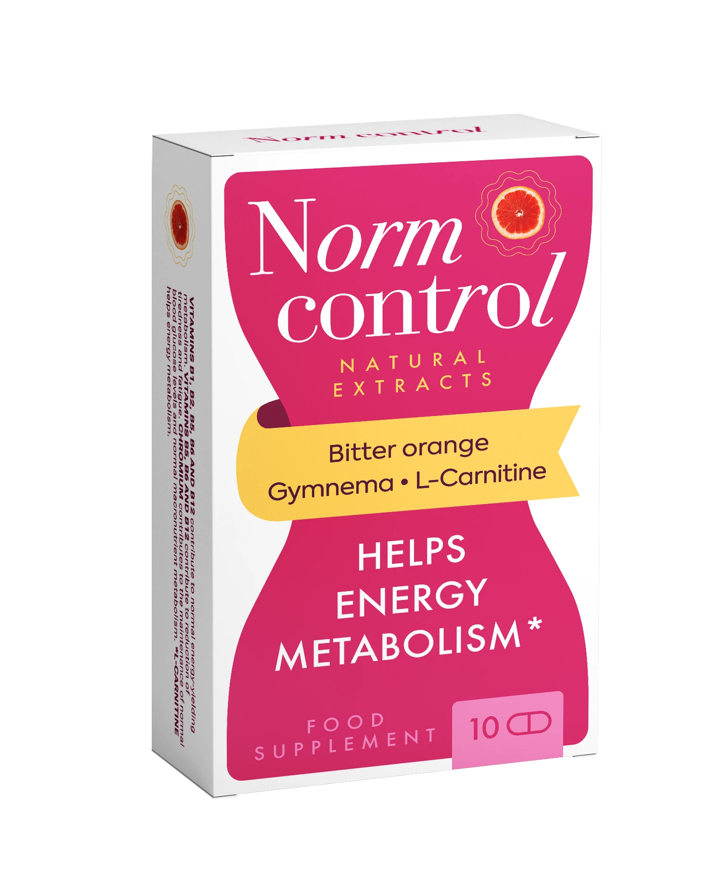
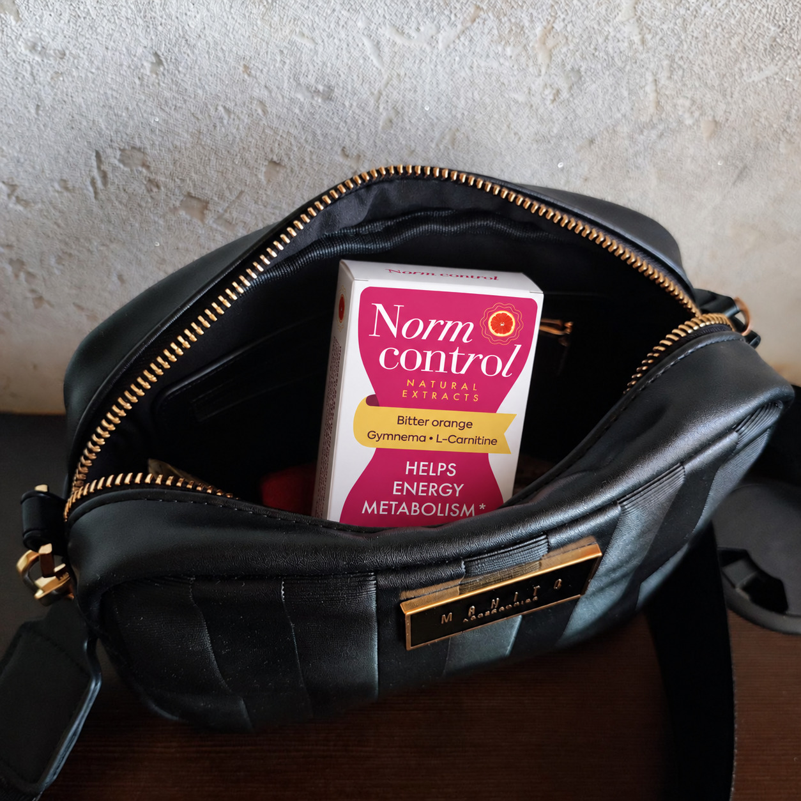
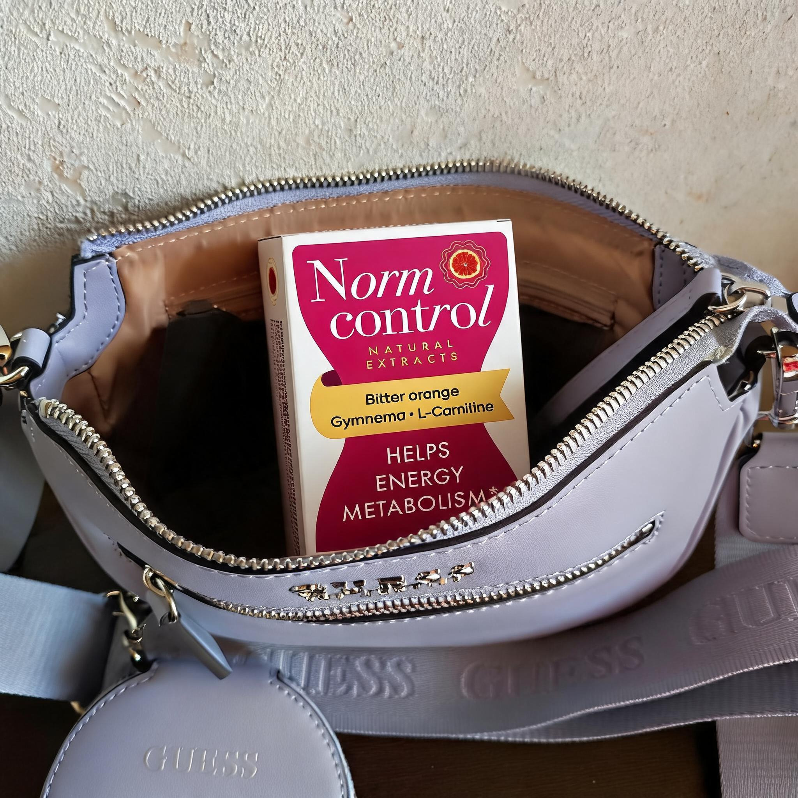
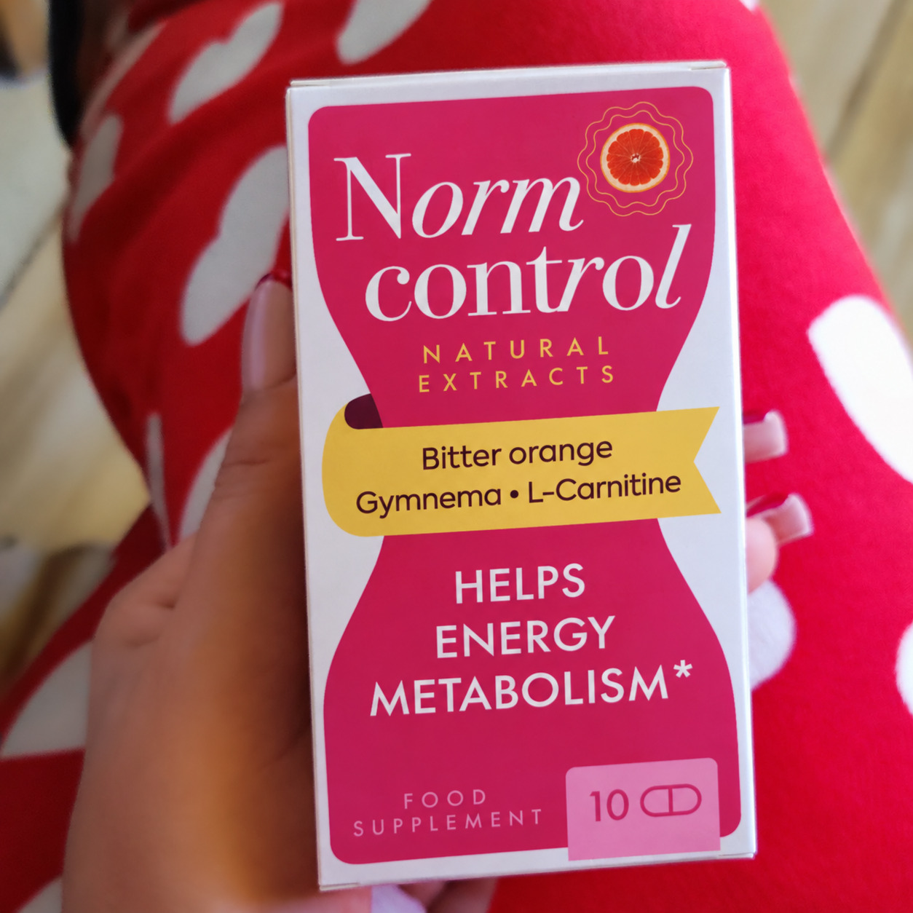

« L'hormone de la mort » — le cortisol : une médecin belge révèle pourquoi après 35 ans vous grossissez même en mangeant à peine, et comment des milliers de femmes ont perdu jusqu'à 20 kg en 17 jours
Le cortisol détruit votre métabolisme de l'intérieur. Il bloque la combustion des graisses. Il force votre corps à stocker chaque calorie. Tant que vous ne l'arrêtez pas, aucun régime ne fonctionnera. Yvonne, 54 ans, de Bruxelles, a perdu 24 kg sans régime ni exercice.

Les médecins l'appellent « l'hormone de la mort ». Le cortisol — l'hormone du stress qui, après 35 ans, commence à détruire votre corps de l'intérieur. Il bloque la combustion des graisses, provoque des gonflements, de la fatigue, une faim constante. Et c'est précisément LUI qui vous fait grossir — même quand vous ne mangez presque rien.
Une étude récente de spécialistes belges a révélé un ingrédient naturel capable de stopper le cortisol et d'aider les femmes à éliminer jusqu'à 4 kg de graisse par semaine — sans régime, sans exercice, sans jeûne. Jusqu'à 20 kg de graisse pure en un mois. Attention : cette méthode n'a absolument rien à voir avec des laxatifs !
Si vous avez plus de 35 ans et que vous n'arrivez pas à maigrir quoi que vous fassiez — lisez cet article jusqu'au bout. Vous découvrirez comment le cortisol sabote votre corps, pourquoi aucun régime ne peut fonctionner tant que vous ne l'arrêtez pas, et quel simple rituel naturel peut tout changer. Sans jeûne, sans fitness, sans interventions chirurgicales.
« J'avais 54 ans et j'avais peur d'aller à la plage avec mes petits-enfants »
Je m'appelle Yvonne Dupont. J'ai 54 ans et je vis à Bruxelles. Quatre années de kilos en trop m'avaient transformée en recluse. La graisse s'accumulait sur le ventre, les cuisses, les bras, sous le menton. Je mangeais très peu, mais mon poids continuait d'augmenter.
Ma vie intime s'était complètement éteinte. J'avais honte. Je ne me sentais plus femme. J'avais perdu ma confiance, mon désir, je m'étais perdue moi-même.
Chaque matin, je me réveillais et la première chose à laquelle je pensais, c'était mon corps. Ce poids. Cette sensation de n'avoir aucun contrôle. Que votre propre corps est votre ennemi. Vous connaissez ça ? Ce sentiment quand vous vous regardez dans le miroir et que vous ne vous reconnaissez pas ?
J'ai tout essayé — des thés amincissants, des pilules, un abonnement fitness, le régime céto, le jeûne intermittent. Les pilules me causaient des douleurs à l'estomac et de la diarrhée. À la salle de sport, je souffrais pendant des mois et les kilos ne bougeaient pas ou revenaient. Le régime céto me donnait des vertiges et ne fonctionnait pas non plus.
Les médecins haussaient simplement les épaules : « C'est l'âge, le métabolisme ralentit, il faut vous y faire. » Aucun d'entre eux n'a demandé mon taux de cortisol. Personne n'a dit que mon organisme était empoisonné par « l'hormone de la mort » qui détruisait mon métabolisme à chaque minute.
L'un m'a prescrit des diurétiques. Un autre a recommandé une opération — une procédure bariatrique à 15 000 euros. Un troisième m'a dit de manger moins. Mais je ne mangeais que 1 200 calories par jour et je grossissais quand même !
J'étais tellement désespérée que je pleurais la nuit. Je ne sortais presque plus de chez moi. Je cessais lentement de vivre. Ma fille m'a dit : « Maman, tu as l'air d'avoir dix ans de plus que ton âge. » Ce fut le moment où je me suis dit — soit ça change, soit...
Mais alors tout a changé
Au marché de Bruxelles, j'ai rencontré une femme qui souffrait autrefois exactement du même problème. Elle a remarqué à quel point j'étais nerveuse — je me tenais devant un étal de vêtements et je regardais des jupes qui ne pouvaient pas m'aller. Elle m'a demandé ce qui se passait. Je n'ai pas pu me retenir et je lui ai tout raconté.
Elle a souri et m'a dit qu'elle avait été encore pire — elle pesait 112 kg et les médecins l'avaient prévenue qu'elle risquait un infarctus. Jusqu'à ce qu'elle découvre l'article du docteur Isabelle Lemaire.

Dr Isabelle Lemaire, 74 ans — éminente spécialiste belge du métabolisme hormonal et de l'endocrinologie. Depuis plus de 40 ans, elle aide les femmes à être plus minces, en meilleure santé et à se sentir vraiment vivantes. Auteure de dizaines de publications scientifiques sur l'influence des hormones sur le poids corporel. C'est elle qui, la première, a appelé le cortisol « l'hormone de la mort » — et a expliqué pourquoi il est le principal responsable du surpoids après 35 ans.
J'ai commandé Normcontrol le soir même. Le lendemain matin, après la première capsule, je me suis réveillée et je n'en croyais pas mes sensations. Mon ventre était plus souple. Les gonflements avaient diminué. Après trois jours, mes vêtements étaient plus amples. Je n'ai pas particulièrement changé mon régime alimentaire. Je ne suis pas allée à la salle de sport. J'ai simplement suivi ce que le docteur Lemaire recommandait.
Le deuxième jour, l'appétit constant qui me tourmentait depuis des années a disparu. J'ai arrêté d'aller au réfrigérateur la nuit. Le troisième jour, j'ai enfilé un jean que je n'avais pas porté depuis deux ans. Le cinquième jour, mon mari m'a dit : « Yvonne, que s'est-il passé ? Tu as l'air différente. » Et moi, pour la première fois en quatre ans, j'ai souri.
Pourquoi grossissez-vous — même quand vous ne mangez pas ?
Avec une équipe de scientifiques de premier plan, le docteur Lemaire a révélé une vérité simple à laquelle personne ne croyait au départ : la cause de votre surpoids n'est pas dans votre assiette.
— Dr Isabelle Lemaire, équipe de recherche du Centre métabolique de Bruxelles
Les coupables sont les hormones qui bloquent votre métabolisme après 35 ans. Plus précisément, l'hormone que nous appelons « l'hormone de la mort » — le cortisol.
Qu'est-ce que le cortisol ? C'est l'hormone du stress, produite par les glandes surrénales. À petites doses, elle est nécessaire — elle nous aide à réagir au danger, régule la pression artérielle, soutient l'immunité. Mais après 35–40 ans, le corps commence à en produire de plus en plus. Et c'est là que réside le problème.
Imaginez-le comme une goutte de poison que vous recevez chaque jour. Une seule goutte ne fait rien. Mais après un an, deux ans, cinq ans — ce poison s'accumule. Et votre corps commence à se dégrader.
Que fait exactement le cortisol à votre corps ?
- Détruit la partie de l'ADN responsable de la combustion des graisses — vos cellules perdent littéralement la capacité de convertir les graisses en énergie
- Ralentit le métabolisme — même si vous mangez peu, le corps fonctionne en « mode économie » et stocke chaque calorie
- Force le corps à stocker les graisses — même à partir d'un yaourt, même pendant votre sommeil, même d'un verre d'eau citronnée
- Augmente l'appétit — la faim constante, surtout pour le sucré et le gras, n'est pas votre faute — c'est le cortisol
- Provoque des inflammations — gonflements, douleurs articulaires, fatigue, mauvais sommeil — tout cela en est la conséquence
- Détruit le collagène — la peau perd son élasticité, des rides apparaissent, de la cellulite, une peau relâchée
C'est pourquoi vous grossissez plus vite qu'avant. C'est pourquoi le ventre ne disparaît pas. C'est pourquoi apparaissent gonflements, faiblesse, vieillissement. Et c'est pourquoi aucun régime, aucun entraînement, aucune injection ne fonctionne — vous combattez la conséquence, pas la cause.
Le docteur Lemaire et son équipe ont passé 15 ans en recherches pour trouver un moyen de normaliser le taux de cortisol sans médicaments, sans thérapie hormonale, sans effets secondaires. Et ils l'ont trouvé — dans un ingrédient naturel rare que l'humanité connaît depuis des millénaires, mais dont le véritable potentiel amincissant n'a été découvert que récemment.
Cordyceps sinensis — l'arme secrète contre le surpoids
Les scientifiques ont identifié un ingrédient naturel capable de réaliser l'quasi impossible dans le corps — stabiliser les hormones, normaliser le cortisol et activer la combustion naturelle des graisses. Il s'agit du Cordyceps sinensis — un champignon rare que la médecine traditionnelle chinoise utilise depuis des millénaires.
Au Tibet, on l'appelle « le papillon doré » ou « le champignon chenille ». Pendant des siècles, il était si rare et si cher que seuls les empereurs chinois et les hauts fonctionnaires pouvaient le consommer. Ce n'est que grâce aux biotechnologies modernes que sa culture et son accessibilité au grand public sont devenues possibles.
Comment agit le Cordyceps sinensis ?
- Normalise le taux de cortisol — la cause principale de la prise de poids incontrôlée. Le corps cesse d'être en état de stress chronique et « libère » enfin les réserves de graisse
- Hautement efficace pour la prévention de l'obésité — en tant que composant d'une thérapie complexe pour la réduction du poids, il agit à plusieurs niveaux simultanément
- Assainit l'organisme et participe à la création d'un microbiote intestinal sain — 80 % du système immunitaire se trouve dans les intestins, et c'est précisément leur état qui détermine si vous grossissez ou maigrissez
- Améliore les indicateurs métaboliques — le corps arrête de stocker les graisses et commence à les brûler comme carburant
- Stimule la production d'ATP — un composé organique grâce auquel l'activité physique et l'endurance augmentent. Au lieu de la fatigue et de la faiblesse, vous aurez de l'énergie toute la journée
- Régule le taux de sucre dans le sang — les envies constantes de sucre disparaissent, vous arrêtez de « vider le réfrigérateur » la nuit
« Le Cordyceps sinensis est unique en ce qu'il n'agit pas seulement sur les symptômes — il attaque directement la cause hormonale du surpoids. Le corps passe du mode stockage au mode combustion. Et ce, sans aucun effet secondaire. En 40 ans de pratique, je n'ai rien vu de plus efficace. »
— Dr Isabelle Lemaire
Mais le Cordyceps sinensis seul ne suffit pas. Ce qui compte, c'est la bonne forme d'extraction, la concentration et le dosage. Les compléments alimentaires ordinaires à base de cordyceps que vous pouvez trouver en pharmacie contiennent une concentration trop faible en substances actives. Pour que le cordyceps fonctionne vraiment pour la perte de poids, il doit être traité avec une technologie spéciale.
Normcontrol — le produit qui cible la vraie cause

En collaboration avec des spécialistes de premier plan, le docteur Lemaire a développé un produit à base d'extrait 100% naturel de Cordyceps sinensis en concentration maximale — pour vous offrir un corps léger et beau pour toujours.
Normcontrol est un complément alimentaire naturel sous forme de capsules (20 pcs par boîte) qui agit sur la véritable cause hormonale du surpoids et vous redonne une peau ferme, élastique et la confiance en vous.
Forme : Boîte en carton contenant un flacon en plastique blanc de 20 capsules.
Mode d'emploi : Les adultes prennent 1 capsule 2 fois par jour pendant les repas. Durée recommandée de la cure : 3 mois. Si nécessaire, la cure peut être renouvelée.
- Sans injections, sans régimes, sans exercices
- Même si vous avez 40, 60 ou 80 ans
- Même si vous souffrez de diabète, d'hypertension ou de fatigue chronique
- Même si vous avez absolument tout essayé — et que rien n'a fonctionné
- Composition 100% naturelle sans additifs chimiques
Cure de 3 mois qui changera votre vie
Normcontrol est conçu pour une utilisation en cure. La durée recommandée de la cure est de 3 mois. Si nécessaire, la cure peut être renouvelée. Et voici le plus intéressant — l'effet s'intensifie progressivement :
Semaines 1–2 : Adaptation
Le Cordyceps sinensis commence à normaliser le taux de cortisol. L'appétit constant disparaît, les gonflements et la rétention d'eau diminuent. Vous vous sentez plus légère, vous avez plus d'énergie. Vous cessez de vous réveiller la nuit. De nombreuses femmes rapportent que pour la première fois depuis des années, les chiffres sur la balance n'augmentent plus — et cela seul est déjà une percée.
Semaines 3–4 : Le métabolisme se met en marche
Les graisses commencent à fondre — d'abord les graisses viscérales (internes) qui entourent les organes et sont les plus dangereuses. Ce sont ces graisses qui causent le diabète de type 2, l'hypertension et les problèmes cardiaques. La digestion s'améliore, le microbiote intestinal se restaure. Les vêtements deviennent plus amples. Perte moyenne : 4–7 kg.
Semaines 5–8 : Nettoyage profond de l'organisme
Le corps se libère des toxines et déchets accumulés. Les gonflements disparaissent complètement, les articulations cessent de faire mal, la peau se raffermit et commence à rayonner. L'endurance physique augmente grâce à la production accrue d'ATP. Les femmes rapportent avoir une énergie qu'elles n'avaient même pas à 30 ans. Perte moyenne : encore 6–10 kg.
Semaines 9–12 : Stabilisation des résultats
Le corps est passé en mode combustion pour toujours. La pression artérielle, le cholestérol et le taux de sucre se normalisent. Vous vous sentez comme une autre personne — plus légère, en meilleure santé, pleine d'énergie. La peau est ferme, la cellulite recule. Le résultat de la perte de poids est durable — contrairement aux régimes, le poids ne revient pas car vous avez éliminé la cause, pas seulement la conséquence.
Les résultats d'Yvonne après 17 jours
Mais revenons à Yvonne — cette même femme de 54 ans de Bruxelles dont vous avez lu l'histoire au début :
Après deux mois, j'ai perdu 24 kg. J'ai commencé à porter des robes que je n'avais pas mises depuis 5 ans. Mon mari me regardait à nouveau comme avant. Mes petits-enfants ont dit : "Mamie, tu es belle !" Et moi, pour la première fois depuis des années, j'ai pleuré — mais cette fois de bonheur. »
Yvonne n'est pas la seule. Le docteur Lemaire a recueilli des milliers d'histoires similaires. En voici quelques-unes :
Ce que disent d'autres femmes qui ont essayé Normcontrol
Résultats de nos clientes — avant et après


Voyez comme c'est simple !
- Sans régimes ni exercices. Pas besoin de manger des pommes et des salades pendant des mois. Pas besoin de souffrir à la salle de sport. Pas même besoin de sortir de chez vous. Vous pouvez manger ce que vous voulez — Normcontrol agit indépendamment de votre alimentation.
- Depuis le confort de votre foyer. Il suffit de prendre 1 capsule de Normcontrol 2 fois par jour pendant les repas — c'est tout. Vous vivez normalement pendant que votre corps se transforme en machine à brûler les graisses. 10 secondes le matin, 10 secondes le soir. C'est tout le « programme d'entraînement ».
- Sans grands frais. Pas de cliniques coûteuses, d'injections ou d'opérations. Pas d'abonnement fitness à 60 euros par mois. Pas de programmes diététiques onéreux à des milliers d'euros.
- Sans effets secondaires. Composition 100% naturelle. Aucun produit chimique, aucune hormone, aucun laxatif. Votre corps reçoit ce dont il a besoin — rien de plus, rien de moins.
À qui s'adresse Normcontrol ?
1. Vous pesez plus de 90 kg ?
Le premier mois, perdez 8–12 kg, en 3 mois de cure même 20–30 kg ! Dès les 4 premières semaines, vous commencerez à perdre une quantité visible de graisse. Et le plus important — le poids ne reviendra pas car Normcontrol traite la cause, pas le symptôme.
2. Vous êtes préoccupée par des problèmes de santé ?
Cholestérol élevé, hypertension, douleurs articulaires, manque d'énergie, mauvais sommeil ? Après seulement 2 semaines, vos résultats seront excellents. En 4 semaines, les douleurs disparaîtront. Vous ne vivrez plus dans la peur pour votre santé. Normcontrol ne soigne pas seulement la silhouette — il régénère tout l'organisme.
3. Vous aimez la bonne cuisine et ne pouvez pas suivre de régime ?
Ce n'est pas nécessaire. Les régimes stricts ne sont même pas recommandés. Vous pouvez manger ce que vous voulez — Normcontrol agit indépendamment de votre alimentation. Et en plus — après la première semaine, vous remarquerez que vous mangez naturellement moins. Non pas parce que vous vous forcez — mais parce que votre corps a cessé d'envoyer de faux signaux de faim.
4. Vous détestez le sport ?
Ne vous forcez pas à faire de l'exercice. Votre corps est déjà sous pression à cause du surpoids — les exercices forcés peuvent causer encore plus de stress aux glandes surrénales et la production de cortisol augmentera. Il est recommandé de commencer une activité physique légère après 2–4 semaines, quand vous serez plus légère. Et grâce à la production accrue d'ATP, vous aurez aussi l'envie de bouger !
5. Vous êtes complexée par votre poids ?
Vous avez de plus en plus de mal à trouver des vêtements qui vous vont bien ? Vous ne vous sentez pas attirante ? Vous évitez les miroirs, les photos, les maillots de bain ? Donnez-vous moins d'un mois. Vous pourrez enfin porter de belles robes de plusieurs tailles en moins. Vous aurez enfin envie de prendre des selfies. Vous vous sentirez enfin femme.
6. Vous avez peur que ça ne fonctionne pas ?
Nous comprenons. Après tant de déceptions, il est naturel d'être sceptique. Mais Normcontrol n'est pas « un énième produit miracle » — c'est une solution scientifiquement fondée qui cible la vraie cause du surpoids. Des milliers de femmes en Belgique l'ont déjà essayé avec succès.
Ce que vous recevez avec votre commande :
La vie est trop belle pour la diminuer avec des kilos en trop. Vous ne trouvez pas ? Vous n'avez pas besoin de souffrir. Vous n'avez pas besoin d'avoir honte. Vous n'avez pas besoin d'éviter les miroirs. Vous ne risquez absolument rien. La seule chose que vous pouvez perdre, c'est 20, 30 ou même 50 kg de poids en trop.
Remplissez le court formulaire ci-dessous et bénéficiez d'une réduction de 50 % sur Normcontrol. L'offre est limitée !
Aucun paiement préalable n'est nécessaire. Notre livreur vous apportera le colis pour que vous soyez sûre de recevoir un produit original. Paiement à la livraison.
Commandez Normcontrol avec 50 % de réduction
Commentaires (14) :


